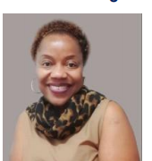
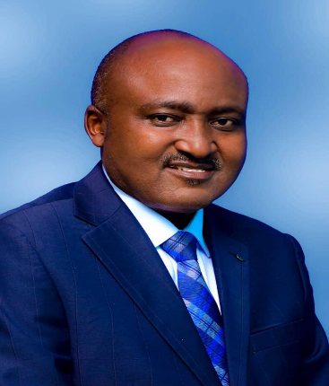

Meet Our Team
Professionals with decades of experience across law, banking, governance and consulting.
Professionals with decades of experience across law, banking, governance and consulting.
Professionals with decades of experience across law, banking, governance and consulting.

Independent consultant in corporate & commercial law, governance, banking & finance.
Ms. Lilian Musingi is an independent consultant, corporate and commercial lawyer with over 22 years of experience. She specialises in corporate governance, banking, finance, compliance and regulatory matters, capital markets, mergers & acquisitions, real estate, intellectual property, oil, gas, energy, mining and insurance. She holds a Bachelor of Laws (LL.B) from the University of Dar es Salaam and a Master of Laws (LL.M) in Commercial Law from the University of Cape Town. Lilian is a Lawyer, Advocate, Notary Public and Commissioner for Oaths, and a certified Board Director and Board Secretary (Institute of Directors of Tanzania). She has worked in the banking sector for two decades, including fifteen years in senior management leading legal, compliance, recovery and company secretary functions.
Her board experience spans several industries. From 2018 to 2024 she served as a Non‑Executive Director and Board Member of Tanzania Finance Development Limited (TDFL), Songas Tanzania Limited and ICEA Lion General Insurance Company, sitting on the Board Audit & Risk Committee and the Corporate Governance & Human Resources Committee. Since June 2024 she has been a Non‑Executive Director of the Dar es Salaam Stock Exchange (DSE), where she serves on the Listing & Trading Board Committee and the Fidelity Fund Committee. She also volunteers as a Board Member of the Association of Real Estate Agents (AREA).
Lilian is passionate about developing people through training, mentorship and coaching. Through a partnership with Fanisi Academy she mentors emerging leaders and delivers high‑impact corporate governance and leadership programmes. She is an active member of the Tanganyika Law Society, the East African Law Society and the Institute of Directors of Tanzania.

Independent consultant in corporate governance & investment law.
Ms. Susan Kavishe is an independent consultant specialising in corporate governance and investment law. She holds a Bachelor of Laws (LL.B) from Bangalore University in India and a Master of Laws (LL.M) in Taxation from the University of Dar es Salaam. Susan is a Lawyer, Advocate, Notary Public and Commissioner for Oaths and has served the legal profession in various committee roles, including six years on the Tax Law Committee of the East Africa Law Society and on the Regional and International Integration Committee of the Tanganyika Law Society.
She has eight years of experience working indirectly with local banks such as UBL Bank, NIC Bank, NCBA Bank, Commercial Bank of Africa and African Banking Corporation as a Security Documentation Manager. In addition, she has more than ten years at senior management level as legal counsel and company secretary for regional and local companies, with a track record of outstanding performance. She is a Certified Board Director and Certified Board Secretary (Institute of Directors of Tanzania) and has completed numerous leadership, management and corporate governance trainings facilitated by IoDT, Empower and Fanisi.
Susan currently serves as Executive Director and Board Member of Tanzania Finance Development Limited (TDFL); Non‑Executive Director and Board Member of Songas Tanzania Limited and ICEA Lion General Insurance Company; and Alternate Non‑Executive Director and Board Member of East African Cables Tanzania Limited. She also sits on several board committees including the Songas Board Audit & Risk Committee, ICEA Lion's Board Investment Committee and East African Cables' Board Audit & Risk and HR & Remuneration Committees. She remains an active member of the Tanganyika Law Society, East African Law Society and the Institute of Directors of Tanzania.

Independent consultant focusing on governance, banking & risk management.
Mr. Stanley Tsikiray is an independent consultant whose practice spans governance, corporate and retail banking, microfinance, human resources and risk management. A qualified banking professional in international banking, he has over 45 years of experience across West, East and Southern Africa. During his career he held Chief Executive Officer and Managing Director roles with Standard Chartered Bank in Sierra Leone, The Gambia and Tanzania, served as Chief Executive Officer of Opportunity Bank Tanzania and was Regional Director for Africa for Opportunity International.
Stanley currently sits on the boards of URWEGO Bank Ltd in Rwanda (part of HOPE International), HOPE Congo in Brazzaville, SMEP in Kenya and Turame Community Finance in Burundi (the latter pending central bank vetting). He previously served on the board of Standard Chartered Bank Tanzania (part of the Standard Chartered Bank PLC group) for ten years until 2024, and he sat on the boards of Opportunity Uganda for four years and Opportunity Bank in the Democratic Republic of Congo for five years. His extensive leadership background across multiple jurisdictions provides clients with deep insights into governance, risk management and organisational strategy.

Advocate & consultant in corporate, commercial law and energy projects.
Mr. Joseph Tadayo is an advocate and corporate law consultant with more than three decades of experience spanning banking, corporate and commercial law, intellectual property, mining, energy and major project finance. Highly sought after for government and commercial litigation and arbitration, he is also known for drafting and reviewing complex legal instruments. Joseph holds a Bachelor of Laws (Upper Second Honours) from the University of Dar es Salaam and a Master of Arts in Peace Studies and Conflict Resolution from the University of Bagamoyo. He is a Lawyer, Advocate, Commissioner for Oaths and Notary Public for both Tanzania and Zanzibar and an active member of the Tanganyika Law Society and East African Law Society.
Joseph’s career includes service in the Ministry of Justice and Attorney General’s Chambers as a state attorney, roles with Law Associates (Advocates) and leadership as Managing Partner of TanAfrica Law Chambers. He has represented numerous banks and financial institutions—including TIB Development Bank, Twiga Bancorp, African Banking Corporation, Commercial Bank of Africa, Akiba Commercial Bank, NIC Bank, KCB Bank, NCBA Bank, BOA Bank and UBL Bank—and acted as legal counsel to public and governmental bodies such as the Presidential Parastatal Sector Reform Commission (PSRC), Tanzania Breweries Limited, Tanzania Hotels Investments, various pension funds, the Japanese Embassy, the Consulate of the Union of Comoros, IMPREGILO, GAPCO, CALTEX, ENGEN, KOBIL, the Evangelical Lutheran Church in Tanzania (ELCT), the National Muslim Council of Tanzania (BAKWATA) and the Anglican Church of Tanzania.
He has extensive experience in joint ventures, mergers, acquisitions, restructurings, receiverships, liquidations and public listings and has worked on landmark transactions such as ATCL, TANINVEST, ACCOR, Afrique and PROPACO projects, the Hanang Wheat Complex (with assets valued at nearly TZS 10 billion), the sale of Pepsi Cola assets, Tanzania Coffee Export deals, the receivership of Kigamboni Oil Company Limited on behalf of TIB Development Bank, restructurings of Tropical Fisheries Limited, Boko Hotels and Resorts Limited, Chui Paints Limited, and deals involving Wardell Armstrong, Dominion Oil and ARL Gold.
Beyond his legal practice, Joseph served as a Member of Parliament and contributed to the Parliamentary Legal and Constitutional Affairs Committee, the Parliamentary Immunities, Powers and Privileges Committee and the Parliamentary Standing Committee on Local Authorities Accounts (LAAC). He was awarded a Certificate of Appreciation by President Jakaya Mrisho Kikwete for his outstanding contribution to Tanzania’s constitutional reform process.